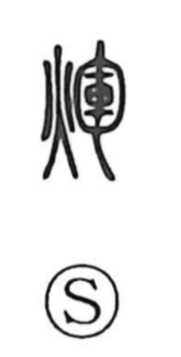

輝

Kun: kagayaku | On: ki
to shine ・ radiance ・ brilliance
Explanation
A phono-semantic character: the element 軍 functions as the phonetic, signaling the on-yomi ki—just as in 揮 (ki, “to wield”). The older, proper form is 煇, built with the fire radical to convey light, and the Shuowen glosses it simply as “light.” From that base it came to mean “light” and “to shine,” and although 煇 and 輝 represent the same word, 輝 became the broadly used graphic form. The term likely began as an echoic word, suggesting the twinkling, glistening flash of something that shines.